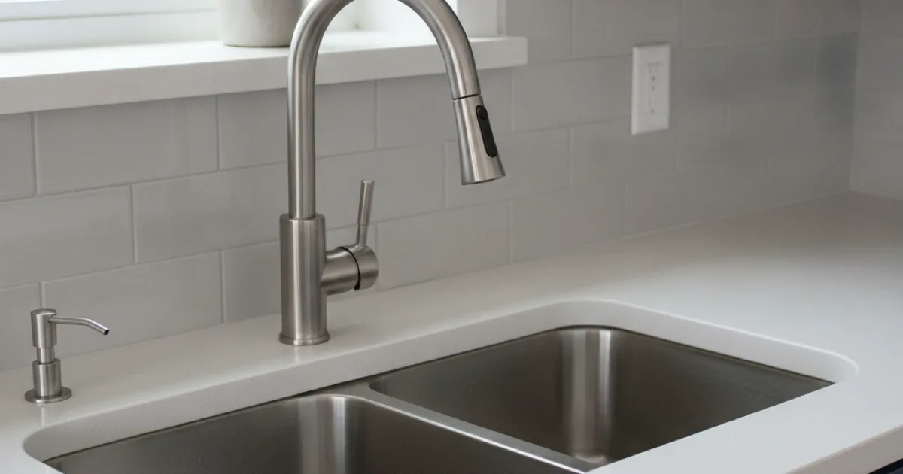
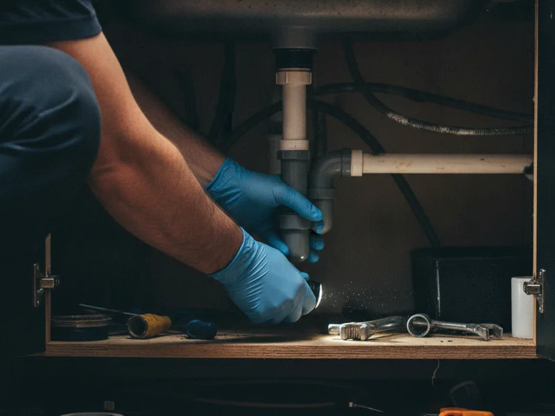

Sink Installation in Armonk, NY
New kitchen or bathroom sink on the way? We handle the plumbing connections so it's watertight, level, and ready to use, with no leaks hiding under the counter.
- Licensed & Insured
- Same-Day Service Available
- Upfront Pricing
- 15+ Years of Experience

How sink installation works
We start by removing the old sink and checking the condition of the supply lines, shutoff valves, and drain assembly underneath, since these are often reused or need minor updates depending on your new sink's configuration. From there, we set the new sink, connect the water supply and drain, and install the garbage disposal connection if your setup includes one.
Once everything is connected, we test the fill, drain, and disposal thoroughly and check every joint under the counter for leaks before we consider it finished. If your new sink has a different basin configuration than the old one, that's part of the same visit, not a separate job.

What affects the cost
- Sink material and mounting style. Undermount, top-mount, and farmhouse sinks each install differently.
- Changing basin configuration. Switching between single and double basins can require adjusting the drain plumbing underneath.
- Condition of existing supply lines and shutoffs. Older or corroded parts sometimes need replacing alongside the sink itself.
- Garbage disposal connection. Adding or reconnecting a disposal unit adds a bit of extra work to the install.
- Countertop cutout requirements. A new sink that doesn't match the existing cutout size needs coordination with whoever is handling the countertop.
Local factors in Armonk
One of the more common kitchen updates we see in Armonk homes is a homeowner moving away from an older double-bowl sink in favor of a single, larger basin, often alongside a broader kitchen refresh. It's a smaller-scope change than a full renovation, but it does mean reworking the drain plumbing underneath to match the new configuration, since a single basin drains differently than two separate bowls sharing one trap.
We'll look at what's already there and tell you plainly whether it's a straightforward swap or whether the drain layout needs more adjustment than expected.
Take a look at everything else we handle beyond sink installation.
Getting the most from your new sink
A correctly installed sink with solid connections should hold up for years without issue. Avoiding harsh drain cleaners, not putting excessive weight on the edges of an undermount sink, and addressing any small drips at the shutoff valves early all help protect the work. HGTV's kitchen design resources are a good reference if you're still deciding on basin style, material, or layout before we install anything.
If you're also updating the faucet, that's worth coordinating in the same visit — see installing a new faucet to match your new sink. And if other fixtures in the kitchen or nearby bathroom are also due for an update, we can talk through replacing other dated fixtures at the same time.
When to call a pro
Call us when you've picked out a new sink and you're ready to have it installed, or if your current sink is cracked, chipped, or leaking underneath. If you're planning a bigger change, like a full kitchen plumbing remodel, sink installation is usually just one piece of that larger project, and we're happy to talk through both at once.
See our sink and fixture installation services for everything else we install throughout your home.
Frequently asked questions
Can you switch my double-bowl sink to a single basin?
Yes. It usually means adjusting the drain plumbing underneath to match the new basin, which we handle as part of the installation.
Do I need to buy the sink myself?
Either works. We're happy to install a sink you've already purchased, or help you choose one that fits your countertop and plumbing.
How long does sink installation take?
A standard sink swap is usually completed in a few hours. Changing basin configuration or dealing with older plumbing underneath can add time.
Can you reconnect my garbage disposal to a new sink?
Yes, reconnecting or installing a garbage disposal is part of a standard kitchen sink installation.
What if my new sink doesn't match my existing countertop cutout?
We'll flag that right away. Depending on the difference, it may need coordination with whoever is handling your countertop before we can complete the plumbing connections.
Will you check for leaks after installing my sink?
Always. We test the fill, drain, and any disposal connection and check every joint under the counter before considering the job complete.